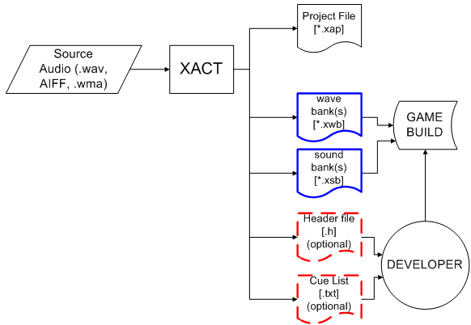
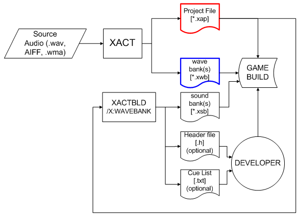

By Scott Selfon, Audio Content Consultant, Xbox Advanced Technology Group
Audio content for the Xbox® is typically generated from files authored using the various tools available to content creators. In areas where this content interacts with game code, the ability to automate aspects of integration can be a very useful and timesaving tool. While actual content implementation remains in the hands of the sound designer, the developer is assured of getting the very latest versions of all assets, and in some cases, updated information about asset formatting and locations. In this paper, we will discuss the following: (1) command-line versions of several tools that can be used to integrate audio into the overall game build process, (2) how the command-line versions of these tools can be used, where applicable, to ensure that audio remains in the most up-to-date format, and (3) methods that developers can use to tie their code to certain types of audio assets to obtain the composer or sound designer's desired configuration information.
DSP Builder is the graphical user interface (GUI) for creating DSP effects images, which can be downloaded to the global processor of the Xbox audio system for realtime effects management.1 While the actual effects remain static from build to build, the content creator may manipulate effects chains, volumes, and the effects' parameters. XGPImage, the command-line application for generating DSP effects images, may be used to build the latest version of a DSP effects image from either of the following: (1) a manually authored .ini file, or (2) the .ini file automatically generated by DSP Builder (recommended). For details on command-line use of XGPImage, see the Xbox Development Kit documentation.
Both DSP Builder and XGPImage will generate a header file as well as the .bin effects image file. The header file contains several useful definitions that a developer can reference without having to adjust their code from build to build:
The XACT authoring tool consists of both a graphical user interface (XACT.exe), as well as a command-line tool (XACTBld.exe) that can be used for build automation. The format for wave banks is static, so rebuilding them with every game build is not typically necessary. However, as a game's wave banks are being assembled, checking the source content into the build tree may be desirable, as that content may be edited, resampled, or otherwise altered. In order to provide build automation for wave bank generation, wave banks can be built with the command-line tool.
More interesting here is the sound bank (.xsb) format. As new features are added to the XACT engine and authoring tool, the .xsb format is subject to some changes in each release. Rather than bloat the engine with legacy code to give it the capacity to read each XDK version's sound bank format, the XACT engine only understands the .xsb sound bank format that corresponds to its specific version. This means that sound banks should currently always be built with the latest version of XACT. When a title upgrades its XDK libraries, sound banks should be rebuilt as well.

Illustration Content build and delivery managed by composer/sound designer. Source waves are pulled into wave banks (possibly adding ADPCM and/or 8-bit depth reduction to some sounds) using the XACT tool. The content creator creates one or more sound banks to go with these wave banks, builds them, and then checks these (blue) files into the build. Other generated files (an enumerated header file and the cue list) can be given to the developer if he or she wishes to use them. In case future editing is needed, the content creator retains both the XACT project file and the source media.
Once the latest XDK (and thus the most recent version of XACT) is installed, selecting Build from the File menu of XACT refreshes all sound banks with the most recent file format.
As an alternative to manually having to launch the XACT authoring tool and select Build with each XDK update, a title can use xactbld.exe to automate the audio build process. This is particularly useful if the content is complete and unchanging. In such a case, the title can automate the process rather than force the content creator to use the XACT UI to manually regenerate the sound banks.

Illustration A more automated version of XACT content delivery. The content creator generates and delivers wave banks (but not sound banks), and her XACT project file is also checked into the build. Then, every time the game is built, the command-line XACTBld tool can be run by the developer (or by the automated build process) to generate the sound bank(s) and possibly other supporting files that the developer can use. Because the game build probably does not store the source wave material, the "/X:WAVEBANK" switch keeps xactbld from trying to generate the wave banks. The wave bank file format is stable, so it will not change from XDK release to release.
Again, the wave bank file format is static, so the developer will not typically have to worry about having all the game's source wave assets checked into his or her project tree. Rather, the actual generated wave bank should typically be sufficient. But as sound bank formats may change, the XACT project file (.xap) can be used with the command-line XACTBld tool to regenerate sound banks, using the appropriate file format for the corresponding version of the XACT library. A command-line switch allows you to build the sound bank without building other files that either have not changed or are not needed.
The Microsoft® DirectMusic® Content Analyzer is a command-line tool that allows you to optimize the footprint of the DirectMusic engine, based on the specific library2 features your title uses. Such optimization typically leads to savings of 100 KB or more of in-memory footprint. To utilized build automation, all content (segments, DLS collections, and so on) should be checked into the game's project tree. Then, with each build, the content analyzer should be used to scan each piece of content. Based on the type of tracks used, aspects of the DirectMusic library are linked in or discarded. The results are stored in a header file, which can be used to create a custom object creation factory.
It is important to note that the tool is not always completely accurate, especially if aspects of DirectMusic usage are applied by means of code (which the tool does not scan) instead of by content. In this case, factory creation will fail at runtime and debug spew will list the missing objects. The command-line tool can then be modified3 to force the inclusion (or exclusion) of specific object types.4
Note DirectMusic Producer for Xbox—the authoring tool for DirectMusic—does not provide a command-line interface for runtime file generation. However, because the DirectMusic file format is static, dynamic file rebuilding is probably less necessary.
Integration of audio assets in the game build environment is an important step to ensuring that the audio presented is what the content author and developer intended. Being able to automate aspects of how audio is incorporated into a title can avoid confusion, errors, and provide more time to focus on audio implementation itself. For this reason, and for easy build-to-build integration into Xbox titles, Xbox audio tools all attempt to provide the ability to generate content from command-line applications.
For more information about topics presented here, please consult the Xbox Audio Best Practices Guide, the Xbox Development Kit documentation, and the white papers in the Audio Designer's Corner. Please also feel free to send an e-mail message to content@xbox.com.
1 For more information regarding DSP Builder, see the white paper Authoring and Auditioning Effects Programs.
2 For more details on DirectMusic library status, recommended authoring practices, and known issues, see Best Practices for DirectMusic on Xbox.
3 For documentation on command-line switches, see the Xbox Development Kit page "DirectMusic Content Analyzer (AudAnalyze)."
4 For more information on DirectMusic content delivery for integration, see the white paper Delivering the Goods: File Management Tricks and Tips.
Monday, August 26, 2002